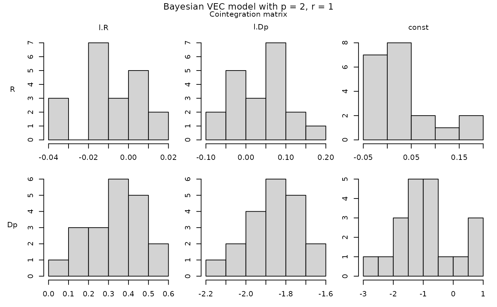
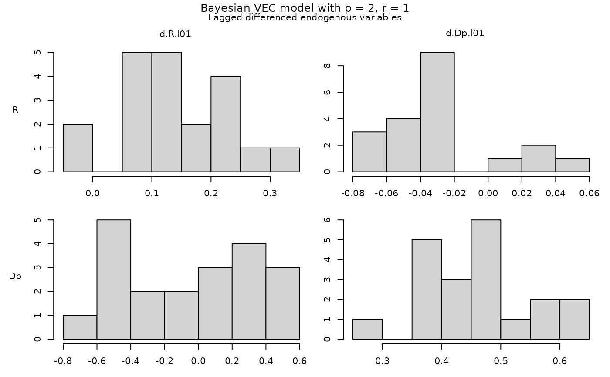
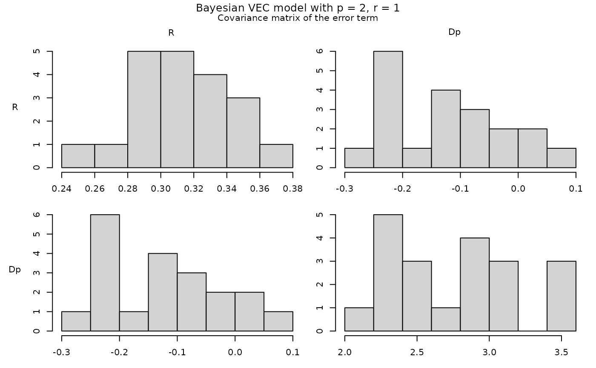
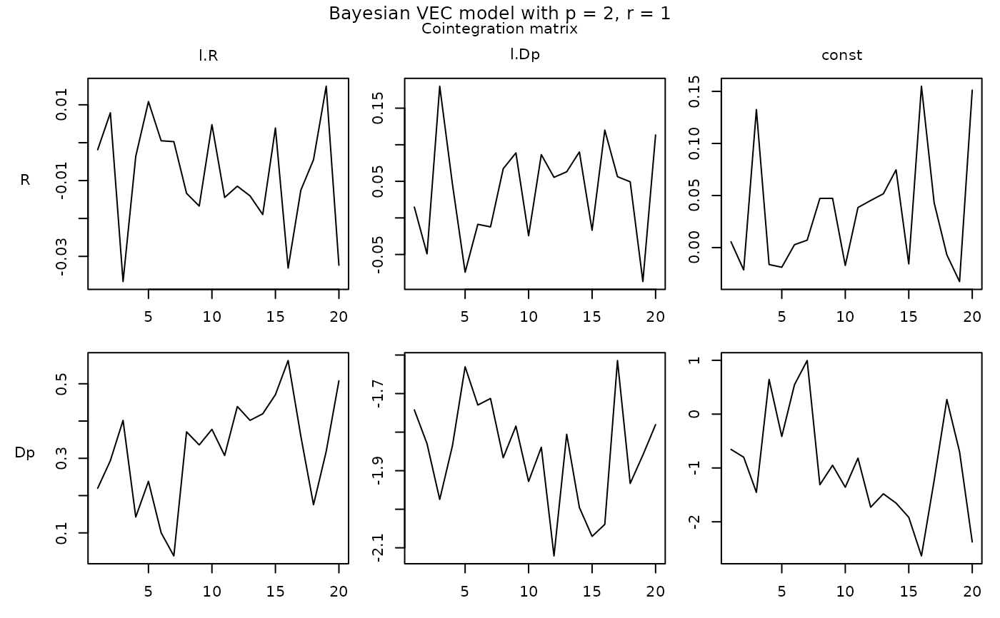
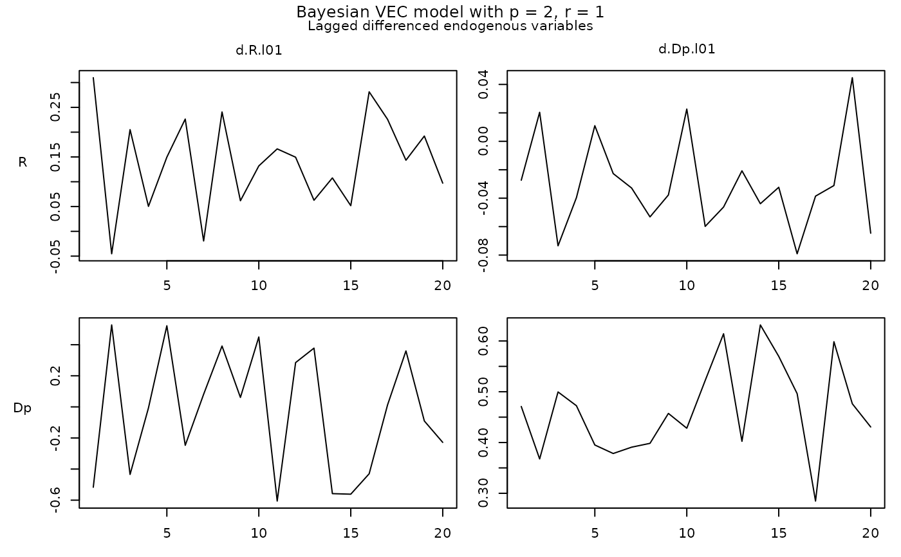
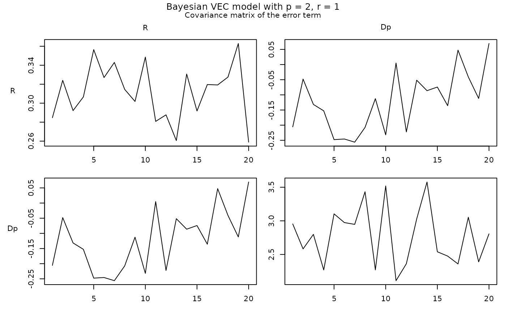
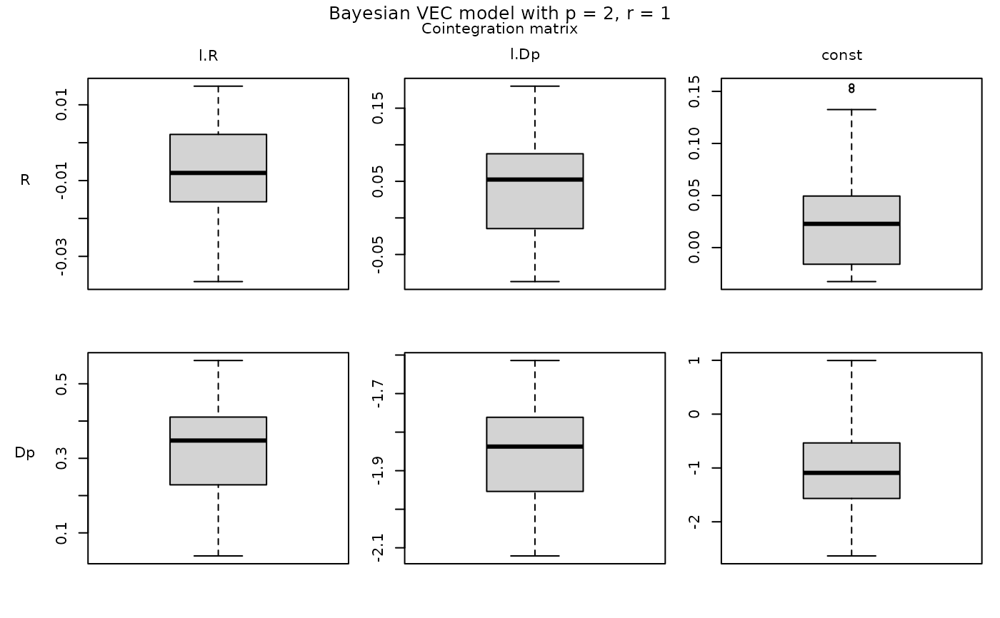
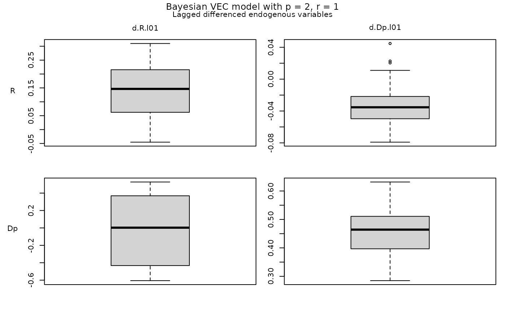
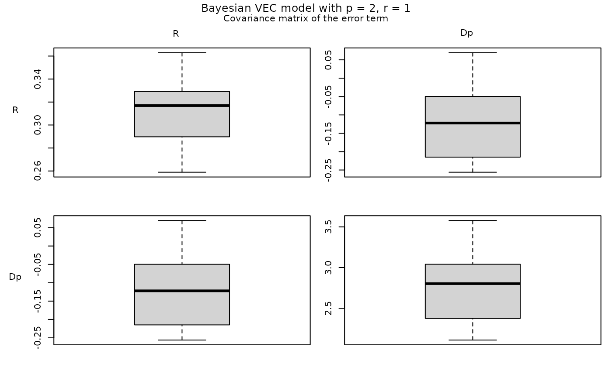

A plot function for objects of class 'bvecmodel'.
Usage
# S3 method for class 'bvecmodel'
plot(x, ci = 0.95, type = "hist", show_zero_y = TRUE, max_cols = 6, ...)Arguments
- x
an object of class 'bvecmodel'.
- ci
interval used to calculate credible bands for time-varying parameters.
- type
either
"hist"(default) for histograms,"trace"for a trace plot or"boxplot"for a boxplot. Only used for parameter draws of constant coefficients.- show_zero_y
if
TRUE(default), a horizontal line with y = 0 is added to the plot. Only used for time varying parameters.- max_cols
an integer of the maximum number of regressors per figure. A block with more regressors than this is drawn as several figures of nearly equal width. Defaults to 6.
- ...
further graphical parameters.
Details
The coefficients of the error correction term are displayed as draws of the cointegration matrix \(\Pi = \alpha \beta^\prime\) and not as draws of the loading matrix \(\alpha\) and the cointegration matrix \(\beta\) separately. The latter two are only identified up to a rotation, so their individual draws are not informative, while their product is.
The function draws one figure per block of coefficients – the cointegration matrix, the lagged differenced endogenous variables, the differenced exogenous variables, the deterministic terms, the contemporaneous endogenous variables of a structural model, and the covariance matrix of the error term – instead of one figure for the whole model. A model with many regressors would otherwise produce panels too small to read.
Examples
# Load data
data("e6")
e6 <- e6 * 100
# Create model
model <- create_bvecmodel(e6, p = 2, r = 1, const = "restricted",
iterations = 20, burnin = 10)
# Number of iterations and burnin should be much higher.
# Add priors
model <- add_priors(model,
coef = list(v_i = 1, v_i_det = 1 / 10),
coint = list(v_i = 0, p_tau_i = 1),
sigma = list(df = "k", scale = 1))
# Add initial values
model <- add_initial_values(model)
# Obtain posterior draws
model <- add_posterior_coefficients(model)
# Plot
plot(model, type = "hist")



plot(model, type = "trace")



plot(model, type = "boxplot")


